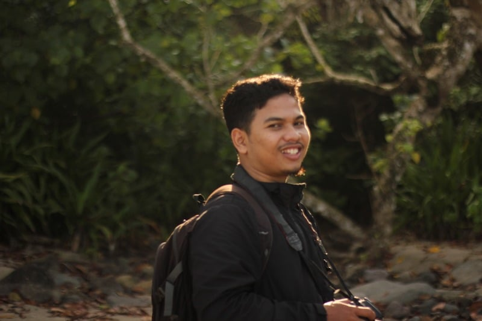
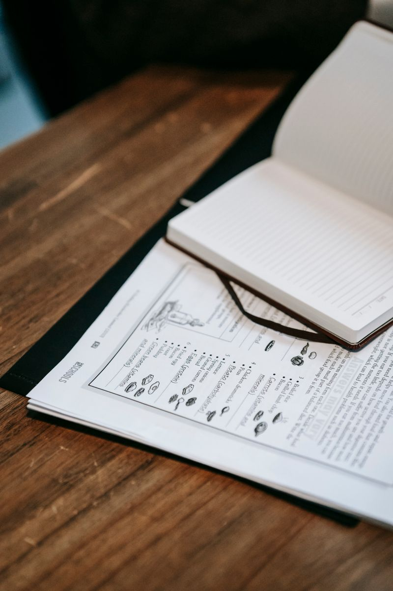
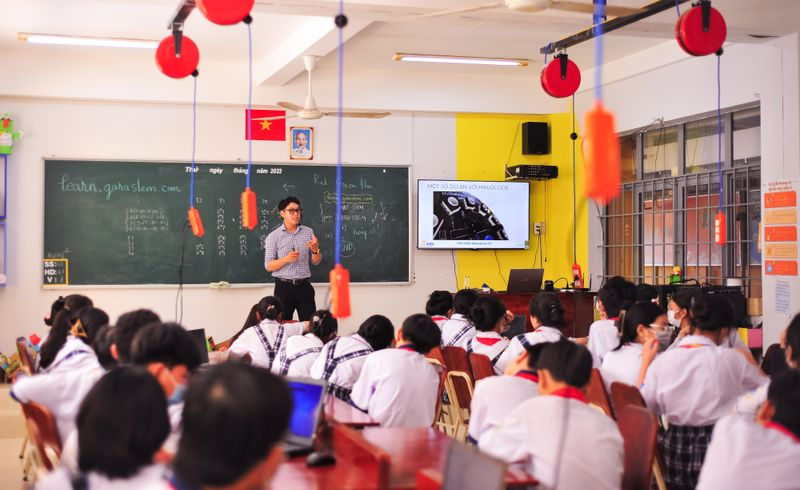
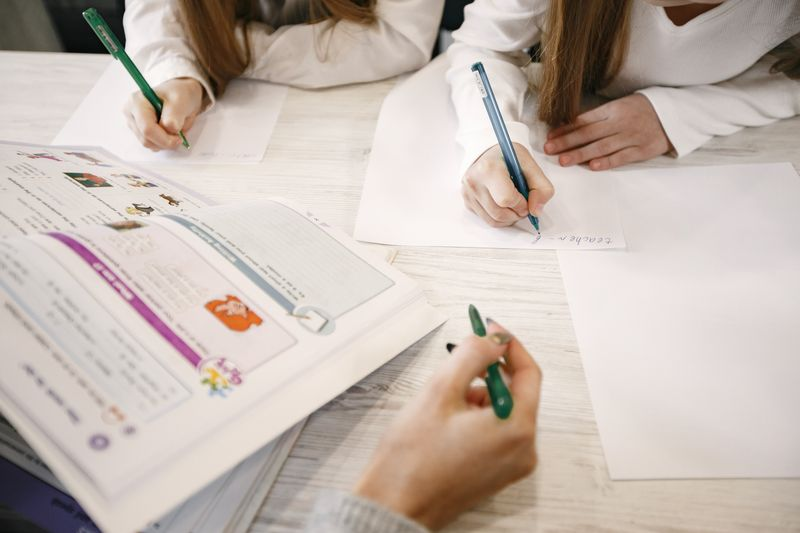
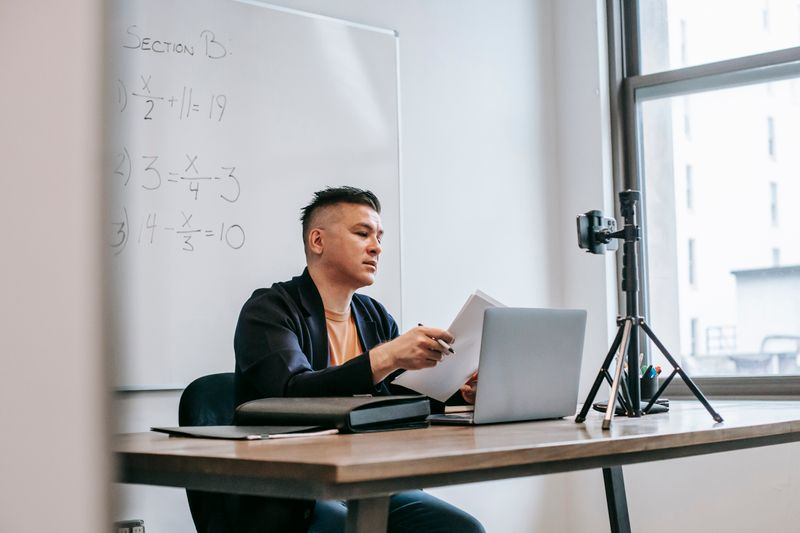
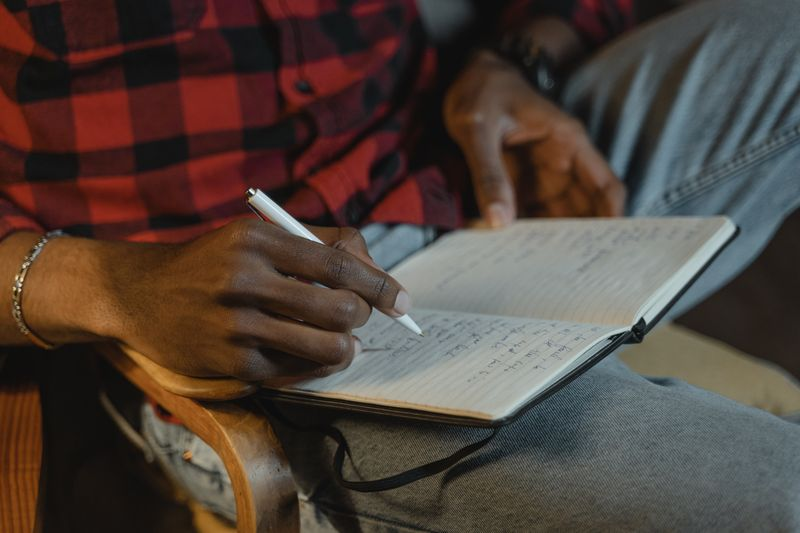

Profil Mahasiswa

Perkenalkan saya Farid. Saya lahir dan dibesarkan di Kabupaten Tasikmalaya, sebuah daerah yang sering dijuluki sebagai "Mutiara dari Priangan Timur". Daerah ini memiliki tempat yang istimewa di hati saya karena keunikannya yang memadukan keindahan alam—seperti megahnya Gunung Galunggung—dengan kekayaan kearifan lokal yang masih terjaga erat, contohnya di Kampung Naga. Lebih dari itu, identitas Tasikmalaya yang kental sebagai "Kota Santri" menawarkan suasana lingkungan yang religius, damai, dan harmonis. Harmoni dari daerah asal inilah yang banyak membentuk karakter saya dan menuntun saya pada jalan pengabdian.
Nilai-nilai kedamaian dari kampung halaman tersebut sangat sejalan dengan inspirasi utama saya dalam memilih jalan sebagai seorang pendidik. Bagi saya, menjadi guru adalah salah satu profesi yang paling mulia, di mana kita selalu dikelilingi oleh ekosistem dan lingkungan hidup yang baik.
"Pendidikan bukan sekadar proses mentransfer ilmu, melainkan seni menanam benih masa depan. Seorang guru mungkin tidak akan melihat semua benih itu mekar saat ini, namun ia tahu pasti bahwa sentuhannya akan hidup selamanya dalam kesuksesan anak didiknya."
Artefak Pembelajaran
Kumpulan produk rencana dan perangkat pembelajaran yang disusun selama PPL Terbimbing sebagai bukti kompetensi profesional.

Rencana Pelaksanaan Pembelajaran (RPP)
RPP yang disusun mencakup tujuan, langkah kegiatan, dan asesmen yang terintegrasi.

Media Pembelajaran
Media interaktif yang dirancang untuk meningkatkan keterlibatan dan pemahaman siswa.

Contoh Hasil Kerja Siswa
Dokumentasi hasil belajar siswa sebagai evidensi pencapaian tujuan pembelajaran.

Video Praktik Mengajar
Rekaman video praktik mengajar untuk refleksi dan evaluasi kinerja.
Penilaian GP & DPL
Penilaian dan umpan balik dari Guru Pamong dan Dosen Pembimbing Lapangan.
Analisis Mendalam Artefak
Analisis RPP — Konteks, Tujuan, Kelebihan & Kekurangan
Konteks: RPP disusun untuk mata pelajaran [nama mapel] di kelas [kelas] dengan mempertimbangkan karakteristik siswa dan kurikulum merdeka.
Tujuan: Merancang pembelajaran yang berpusat pada siswa dengan pendekatan diferensiasi untuk memenuhi kebutuhan belajar yang beragam.
Kelebihan: Mengintegrasikan asesmen formatif di setiap tahapan dan menggunakan model pembelajaran berbasis proyek.
Kekurangan: Alokasi waktu masih perlu disesuaikan dan instruksi perlu diperjelas agar lebih mudah dipahami siswa.
Kajian Teori: Berdasarkan teori Backward Design (Wiggins & McTighe, 2005), perencanaan dimulai dari hasil belajar yang diinginkan kemudian merancang asesmen dan aktivitas pembelajaran.
Analisis Media Pembelajaran — Konteks, Tujuan, Kelebihan & Kekurangan
Konteks: Media dikembangkan untuk mendukung materi [topik] yang bersifat abstrak dan memerlukan visualisasi.
Tujuan: Meningkatkan pemahaman konseptual siswa melalui representasi visual dan interaktif.
Kelebihan: Media bersifat interaktif dan dapat diakses secara digital oleh siswa di luar kelas.
Kekurangan: Beberapa siswa mengalami kendala akses teknologi di rumah.
Kajian Teori: Teori Multimedia Learning (Mayer, 2009) menekankan bahwa siswa belajar lebih baik dari kata dan gambar dibandingkan kata saja (Dual Coding Theory).
Analisis Video Mengajar — Konteks, Tujuan, Kelebihan & Kekurangan
Konteks: Video direkam pada siklus ke-2 PPL Terbimbing sebagai bahan refleksi praktik mengajar.
Tujuan: Mengevaluasi pengelolaan kelas, interaksi guru-siswa, dan efektivitas strategi pembelajaran.
Kelebihan: Terlihat peningkatan dalam pemberian scaffolding dan pengelolaan waktu dibandingkan siklus pertama.
Kekurangan: Distribusi pertanyaan belum merata ke seluruh siswa dan perlu variasi teknik bertanya.
Kajian Teori: Menurut Schön (1983), reflection-on-action melalui video memungkinkan guru mengidentifikasi pola mengajar dan area yang perlu diperbaiki secara sistematis.
Instrumen Penilaian (Lampiran 7 & 8)
Lampiran 7 — Penilaian Penyusunan Perangkat
Penilaian dari Guru Pamong terhadap rancangan pembelajaran.
Lampiran 8 — Penilaian Praktik Mengajar
Penilaian dari Guru Pamong terhadap praktik mengajar.
Model Guru yang Dituju
Misi: Menjadi guru yang memfasilitasi pembelajaran bermakna, inklusif, dan berdampak bagi setiap siswa.
Kompetensi yang ingin dibangun: pedagogik, profesional, sosial, dan kepribadian yang terintegrasi dalam praktik mengajar sehari-hari.
Reflektif & Adaptif
Empatik & Inklusif
Inovatif & Kolaboratif
Refleksi Akhir PPL Terbimbing

Apa yang telah dipelajari selama PPL Terbimbing?
Selama PPL Terbimbing, saya belajar bahwa menjadi guru bukan hanya soal menyampaikan materi, tetapi juga tentang memahami kebutuhan setiap siswa, mengelola dinamika kelas, dan terus berefleksi untuk perbaikan berkelanjutan.
Pengalaman menantang dan solusinya
Tantangan terbesar adalah mengelola siswa dengan beragam kemampuan dalam satu kelas. Solusinya adalah menerapkan pembelajaran berdiferensiasi dan menyediakan scaffolding yang sesuai level pemahaman siswa.
Umpan balik untuk PPL Mandiri
Guru Pamong menyarankan untuk lebih berani dalam mengambil keputusan di kelas, memperkuat teknik bertanya tingkat tinggi, dan membangun hubungan yang lebih personal dengan siswa.
Filosofi Mengajar
Saya meyakini bahwa setiap anak memiliki potensi unik yang perlu difasilitasi, bukan diseragamkan. Sebagai guru, tugas saya adalah menciptakan lingkungan belajar yang aman, inklusif, dan penuh rasa ingin tahu — tempat di mana setiap siswa merasa dihargai dan berani mencoba.
Prinsip mengajar saya berpijak pada pendekatan konstruktivisme (Vygotsky, 1978) bahwa pengetahuan dibangun secara aktif oleh siswa melalui interaksi sosial dan scaffolding. Saya percaya bahwa guru bukanlah satu-satunya sumber pengetahuan, melainkan fasilitator yang menghubungkan siswa dengan pengalaman belajar bermakna.
Nilai yang mendasari praktik saya adalah integritas, empati, dan keberanian untuk terus belajar. Perjalanan PPL Terbimbing mengajarkan bahwa menjadi guru profesional adalah proses seumur hidup — sebuah komitmen untuk terus tumbuh bersama siswa dan komunitas pendidikan.